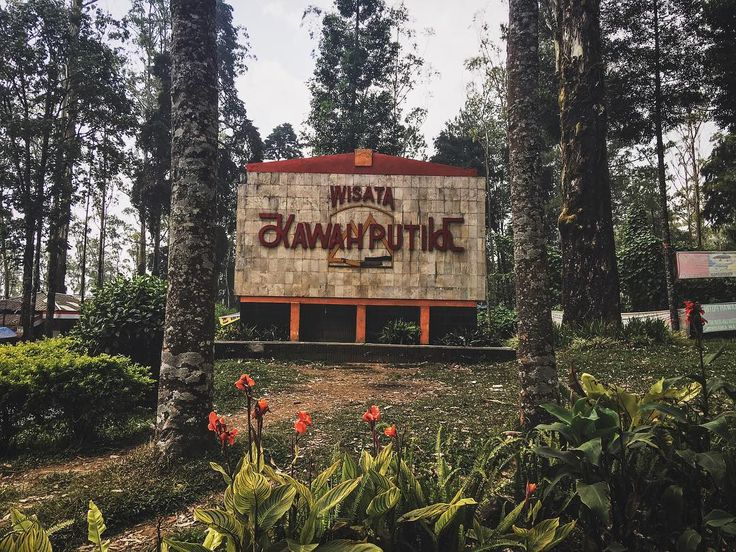
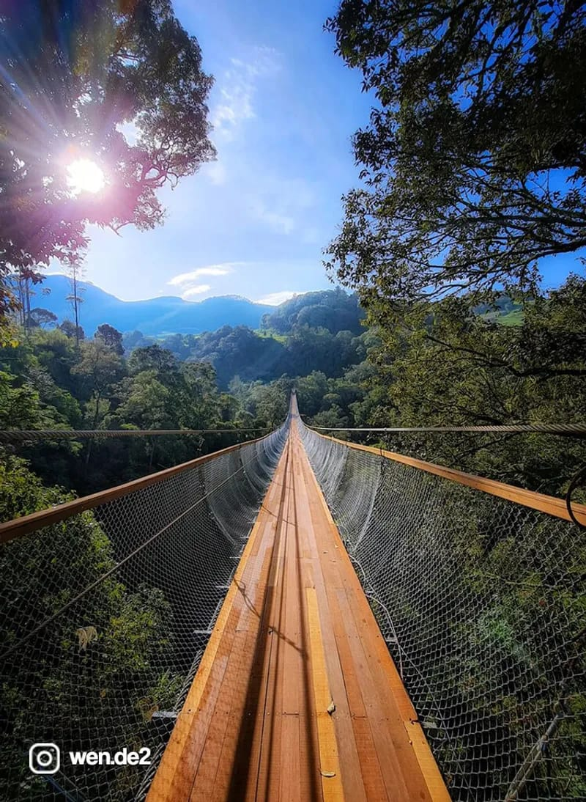
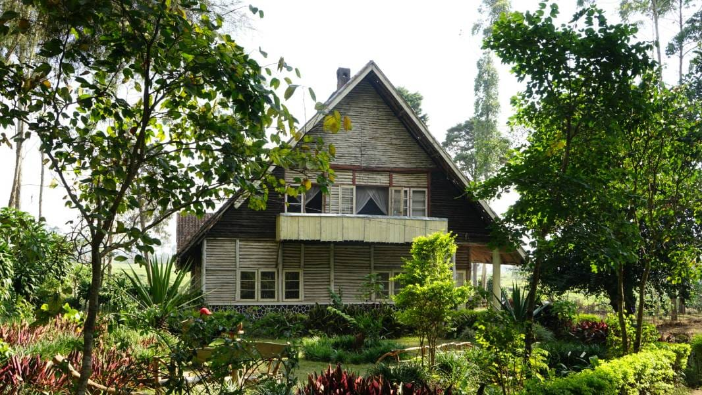
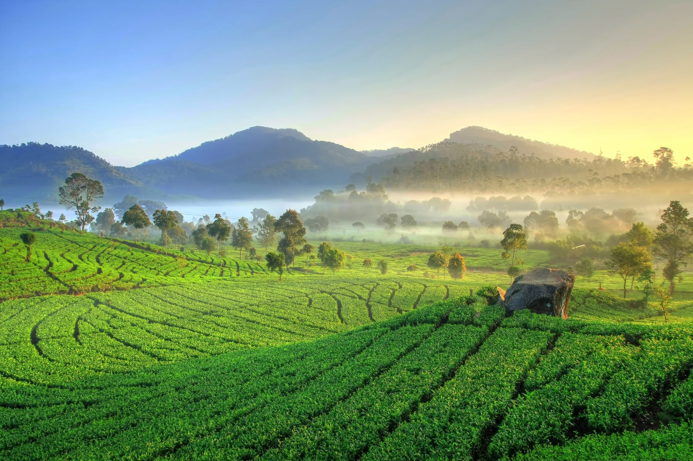

TUR BANDUNG SELATAN




Perjalanan ini mengeksplorasi kawasan Bandung Selatan yang dimulai dengan mengunjungi Kawah Putih, sebuah danau vulkanik ikonik yang memiliki kadar belerang tinggi sehingga warna airnya dapat berubah sesuai kondisi alam. Selanjutnya, peserta diajak mengunjungi Rumah Pengabdi Setan, sebuah bangunan tua yang menjadi lokasi syuting film horor nasional untuk mengamati arsitektur bergaya vintage dan atmosfernya yang unik. Perjalanan dilanjutkan dengan melintasi Jembatan Rengganis, yang merupakan jembatan gantung panjang dengan pemandangan lembah hutan, serta ditutup dengan penelusuran di area perkebunan teh Rancabali untuk menikmati hamparan alam hijau sebelum kembali ke pusat kota.
Rincian Perjalanan
| WAKTU | KEGIATAN | DESKRIPSI |
|---|---|---|
| 07.30 | Penjemputan | Proses penjemputan peserta di titik temu untuk memulai perjalanan menuju kawasan Ciwidey. |
| 07.30-09.30 | Mobilisasi ke Ciwidey | Perjalanan darat menuju arah Bandung Selatan dengan durasi tempuh kurang lebih 2 jam. |
| 09.30-11.30 | Kawah Putih | Mengunjungi area danau vulkanik untuk melihat fenomena alam dan melakukan dokumentasi di titik-titik ikonik. |
| 11.30-12.30 | Istirahat & Makan Siang | Jeda waktu untuk makan siang bersama dan istirahat sebelum melanjutkan ke destinasi berikutnya. |
| 12.30-15.30 | Rumah Pengabdi Setan, Jembatan Rengganis, dan Kebun Teh | Kunjungan ke lokasi syuting film horor "Rumah Pengabdi Setan", melintasi jembatan gantung Rengganis, dan penelusuran perkebunan teh Rancabali. |
| 15.30-17.30 | Perjalanan Pulang | Mobilisasi dari kawasan Ciwidey kembali menuju pusat kota Bandung. |
| 17.30-19.00 | Pengantaran Akhir | Peserta diantar kembali ke titik pertemuan awal dan operasional tur dinyatakan selesai. |
INFORMASI BOOKING
| Tur | : | Bandung Selatan |
| Destinasi | : | Kawah Putih, Rumah Pengabdi Setan, Rengganis Bridge, Kebun Teh Rancabali |
| Durasi Tur | : | 12 Jam |
| Jam Operasional | : | 07.30-19.00 |
| Fasilitas | : | Tiket Masuk, Air Mineral, Snacks, Parkir, BBM, Dokumentasi |
| Harga | : | Rp 400.000 - Rp 650.000 / Pax (tergantung jumlah partisipan) |